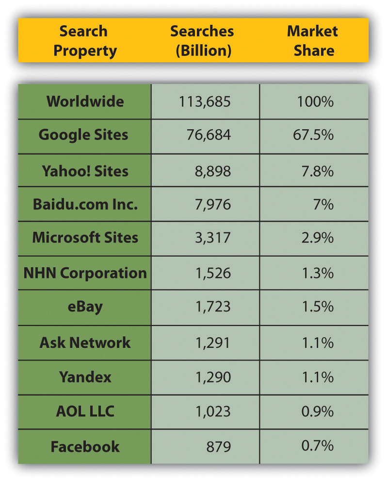
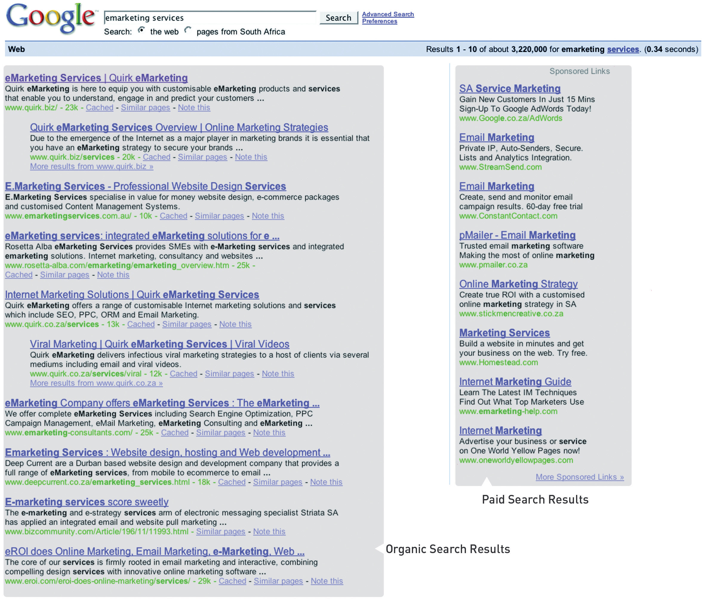
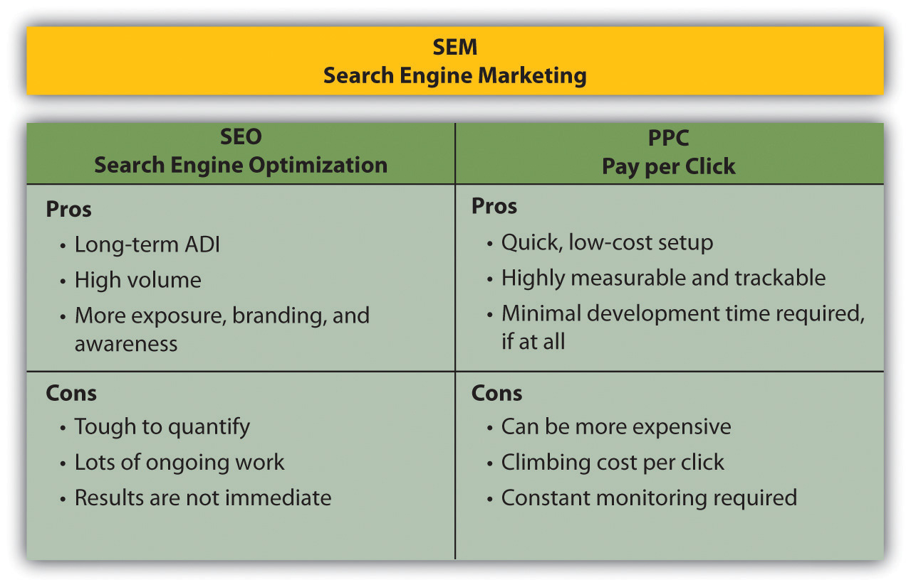

Google, Yahoo! and now Bing are all well-known international search engines. Google is by far the leading player in the market. A comScore study of worldwide search engine activity, released in July 2009, showed that Google has just over 67 percent of the global search engine market share.“Global Search Market Draws More Than 100 Billion Searches per Month,” press release, comScore, August 31, 2009, http://www.comscore.com/Press_Events/Press_Releases/2009/8/Global_Search_Market_Draws_More_than_100_ Billion_Searches_per_Month (accessed June 24, 2010).
When we talk “search,” we refer to two different kinds of results: organic search results and paid search results.
Figure 5.1 Global Search Engine Market Share
Organic search resultsThe listings on a SERP resulting from the search engine’s algorithm. These are not paid for. are the primary product of a search engine. These results are the listings generally found on the left-hand side on the search engine results pages (SERPs)The page that shows the results for a search on a search engine.. They are not influenced by financial payment and are therefore also called natural search results. Organic search results need to be consistently reliable to attract (and keep) users. Google’s growth and success as a search engine can be directly linked to its superior search algorithmA search engine’s set of rules for computing ranking., which returns highly relevant organic results.
Paid search, also known as pay-per-click (PPC)Advertising on search engines where the advertiser pays only for each click on their advertisement. advertising, involves the displaying of sponsored results alongside the organic results. Advertisers bid for placement and pay the search engine when their advertisement is clicked on. Paid search resultsThe listings on a SERP that are paid for. must be distinguished from organic results, since paid placement introduces bias. PPC advertisements are usually displayed at the top and on the right side of the SERPs. Search engines attract and keep users through organic search, but they make most of their money from paid search.
Figure 5.2 SERP Example
As search engines have become essential to a Web user’s Internet experience, so has search become essential to a marketer. Search is important for a number of reasons.
The Internet is a highly competitive environment, with literally billions of pages in existence. So how does anyone find the page they are after? Web users find what they need primarily via search. Search drives targeted traffic (and therefore sales) to Web sites. A Web search is a signal of intent from a Web user.
The daily search-volume numbers are in the hundred millions. According to comScore figures, there were more than 14 billion searches in the United States alone in October 2009.“comScore Releases October 2009 U.S. Search Engine Rankings,” press release, comScore, November 17, 2009, http://www.comscore.com/Press_Events/Press_Releases/2009/11/comScore_Releases_October_2009_U.S._Search_Engine_Rankings (accessed June 24, 2010). That’s around 466 million per day.
If you want your Web site to generate a significant amount of traffic, then it needs to be listed on the major search engines and listed high up enough to be seen. Statistics show that users are not likely to view listings beyond the first thirty results, with the top six (above the foldThe content that can be seen on a screen without having to scroll down.) listings enjoying the lion’s share of clicks.“Google Search’s Golden Triangle,” Eyetools, http://www.eyetools.com/inpage/research_google_eyetracking_heatmap.htm (accessed April 3, 2008).
Beyond traffic, a high-rankingA term used to describe the relative position of a Web page in the SERPs. Web site is valuable for brand perception. Web users often perceive search engine results as an indication of authority. Search visibility promotes brand recognition and research has shown that search engine listings can stimulate brand recall by a three-to-one margin.“The Brand Lift of Search,” Enquiro Search Solutions, December 2007, http://pages.enquiro.com/whitepaper-the-brand-lift-of-search.html (accessed June 24, 2010).
Research has shown that people find organic results more relevant and more trusted than paid search results.“Inside the Mind of the Searcher,” Enquiro Search Solutions, March 2004, http://pages.enquiro.com/whitepaper-inside-the-mind-of-the-searcher.html (accessed June 24, 2010).
Most purchases are subject to a buying cycle. At different points in that cycle, prospects are searching with different key phrases. Give them what they want at each phase, and they will keep coming back until they are ready to buy. In addition, they will be ready to buy more quickly because information is the best way to shorten the buying cycle.
Often, the home page of a browserAn application used to access the Internet. Popular browsers include Firefox, Internet Explorer, and Safari. is set to a search engine. Many users enter URLs (uniform resource locators) into the search engine instead of the address bar of the browser—meaning that even if they know the URL of a Web site, they are finding it through search.
Search engines, Internet users, and Web site owners are involved in a symbiotic, three-way relationship. Each party depends on the other two to get what they need.
Web users use search engines to lead them to Web sites, and they favor search engines that deliver the most relevant and useful results.
The more users they have, the more advertising search engines can sell. Therefore, search engines must list their results according to relevance and importance in order to attract and keep users. In turn, search engines favor sites that are relevant and useful to users.
Web site owners want search engines to send traffic their way. Therefore, they need to make sure that their sites are relevant and important in both the eyes of the search engines and the users.
Larry Page and Sergey Brin sum it up in their pre-Google paper, “The Anatomy of a Large-Scale Hypertextual Web Search Engine”: “The most important measure of a search engine is the quality of its search results.”Sergey Brin and Lawrence Page, “The Anatomy of a Large-Scale Hypertextual Web Search Engine,” http://infolab.stanford.edu/~backrub/google.html (accessed April 3, 2008).
Search engines have four main functions:
A search engine is made up of a number of parts working together:
Search engine marketing (SEM)Marketing that is related to search. has two parts: search engine optimization (SEO)The practice that aims to improve a Web site’s ranking in the search engines for specific keywords. and PPC advertising. These correspond to the two types of search results.
Figure 5.3 SEO + PPC = SEM
SEO aims at improving a Web site’s ranking in the natural search results. PPC advertising involves bidding for placement in the paid search results section of the SERP.
Both SEO and PPC advertising are based around the same fundamental concept: keywords.
Keywords, or key phrases, are what a user enters into a search engine query to find Web sites. Both SEO and PPC advertising involve selecting the keywords that are relevant to a company’s Web site and are used by potential customers. SEO aims to have a Web site rank in the natural results for its target keywords. In PPC advertising, the advertiser bids on desired keywords to achieve rankings in the paid results.
The following two chapters deal with the two divisions of search engine marketing: SEO and PPC.
Search is important for a variety of reasons:
There is a three-way relationship among search engines, Webmasters, and users.
There are four main functions of a search engine: